Hugo
Azure Static Storage Sites
Welcome to this year’s Festive Tech Calendar!!
Hi everyone, welcome to my contribution to this year’s Festive Tech Calendar once more. This will be the fourth year, and I still love the concept of bringing some (Azure) joy to you/your family this season. If you ask me what the biggest news in tech was this year, especially within the Microsoft ecosystem, it’s Azure AI. Shouldn’t be surprising to most of you who know me and my role within Microsoft as Technical Trainer - providing Azure workshops every week to our top customers and partners across the globe - we also integrated (A lot :)) of AI focus early in the year. And it is only becoming more imported.
Therefore, I decided to bring you an Azure AI-inspired topic for this year’s Festive Tech Calendar session, using Computer Vision - Document Intelligence, or what I describe as OCR on steroids.
In the late 1920s and into the 1930s, Emanuel Goldberg developed what he called a “Statistical Machine” for searching microfilm archives using an optical code recognition system, which evolved into an IBM OCR solution.
about 100 years after, OCR is transitioning into powerful document and text analysis capabilities, thanks to Azure AI Document Intelligence APIs.
By reading through this post, and following the demo-steps, you can build your own “Statistical Machine” in no-time. And from there, learn about Azure AI Document Intelligence APIs, to take it even further… let’s go!
To embrace our Azure AI and Microsoft Copilot even more myself, I actually used it to create (parts) of this blog post. What a wonderful world we live in today!
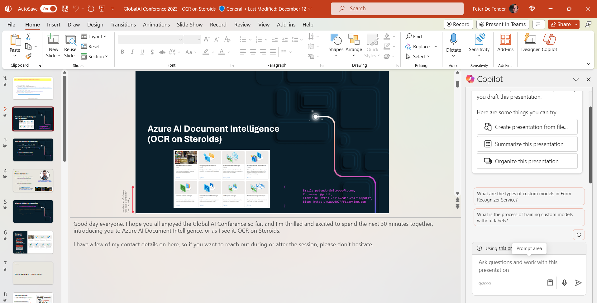
About 2 weeks ago, I presented a session on the same topic for the GlobalAI Community Conference, led by Sjoukje Zaal, Amy Kate Boyd and Henk Boelman, for which the video is available On Youtube
So instead of creating a similar video, I worked with Azure AI, Microsoft Copilot and my own notes, to produce this article. Let me know if you liked it…
In this article, I will use the following flow:
-
I’ll start with setting the scene on Azure AI, using Computer Vision for OCR
-
Followed by the more advanced scenario, using Intelligent Document Processing or IDP
-
Last, I’ll show you how you can train the IDP using your own custom models
-
And I hope to do all this using several demos… which you can go through in your own Azure subscriptions
setting the scene on Azure AI, using Computer Vision for OCR
Computer Vision allows for different use cases, of which the most important ones are:
- Image Analysis – typically used to detect objects or items
- Spatial Analysis – is what you would use to detect people, like video cameras in a store
- OCR or Optical Character Recognition – allows you to recognize text, both printed and handwritten
- Facial Recognition – recognize human identity, without exposing privacy details
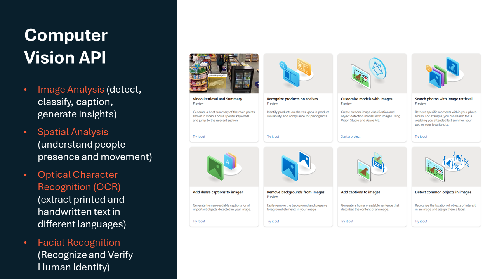
Deploying Azure AI - Computer Vision
If you don’t already have one in your subscription, you’ll need to provision an Azure AI Services resource. If you don’t have an Azure subscription yet, you can sign up for a [Free subscription](https://azure.microsoft.com/en-us/free).
- Open the Azure portal at https://portal.azure.com, and sign in using the Microsoft account associated with your Azure subscription.
- In the top search bar, search for Azure AI services, select Azure AI Services, and create an Azure AI services multi-service account resource with the following settings:
- Subscription: Your Azure subscription
- Resource group: Choose or create a resource group (if you are using a restricted subscription, you may not have permission to create a new resource group - use the one provided)
- Region: Choose from East US, France Central, Korea Central, North Europe, Southeast Asia, West Europe, West US, or East Asia*
- Name: Enter a unique name
- Pricing tier: Standard S0
*Azure AI Vision 4.0 features are currently only available in these regions.
- Select the required checkboxes and create the resource.
- Wait for deployment to complete, and then view the deployment details.
- When the resource has been deployed, go to it and view its Keys and Endpoint page. This is what you would need from a development perspective in your application source code. I will show you an example on how to use a ComputerVision Docker Container later on which also needs those parameters to run successfully…
- From the ComputerVision tab within Azure AI Services, create a new Computer Vision Resource, keeping most default settings as-is.
- Wait for deployment to complete. From the Overview section of Computer Vision, notice the Vision Studio button.
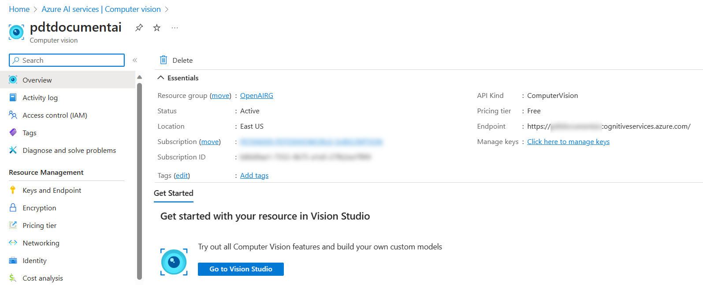
- Click the Open Vision Studio button to navigate to Azure AI Compute Vision Studio.
- From here, select Optical Character Recognition , and select Extract text from images
- Here, you can test the functionality of how text is getting recognized, using the sample images provided, or you can upload your own images as well. I would recommend you to try with handwritten notes as well, especially when your handwriting skills are as great as mine…
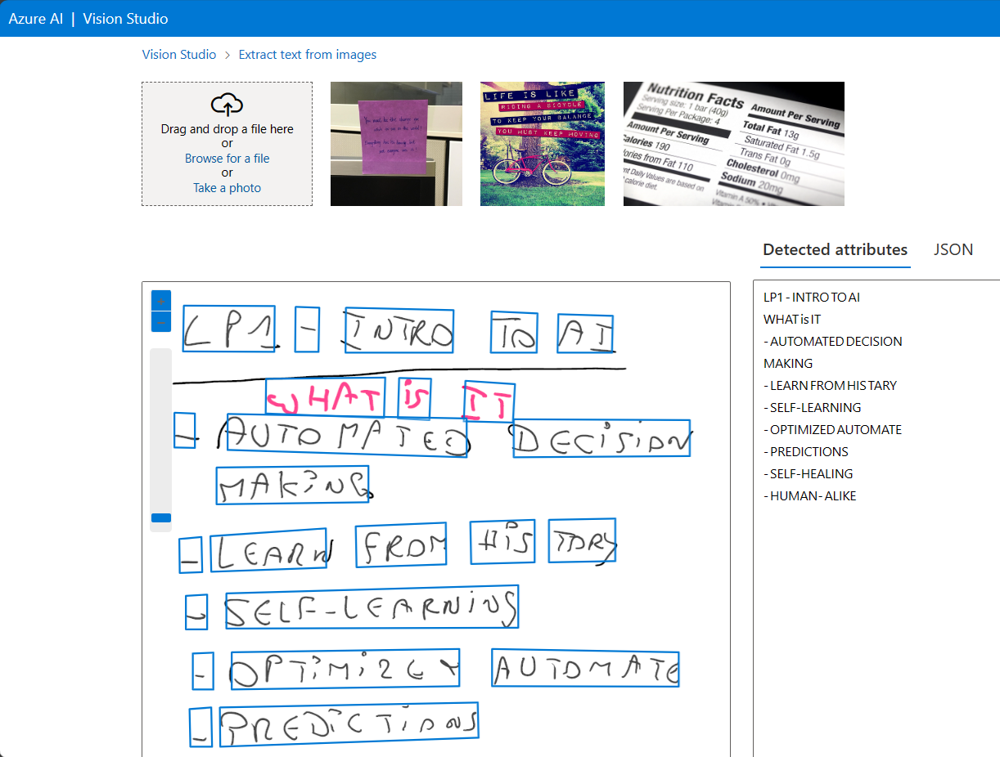
How does OCR recognition actually work?
When we talk about Azure AI, it means using APIs, which allow you to bring in a source into the AI engine, from there processes a given scenario – like read text in the case of OCR, and from there we call the result
Looking at this example, and I’ll show you in a quick demo, each item of text gets moved into a box/a boundary, which gets translated into understandable characters -> forming words
Step 1 involves creating a requestID
Step 2 means reading out the results, for the specific requestID
- Going back to the Vision Studio in the Azure Portal, where you uploaded or selected an image, and saw the outcome of how text gets recognized, select JSON.
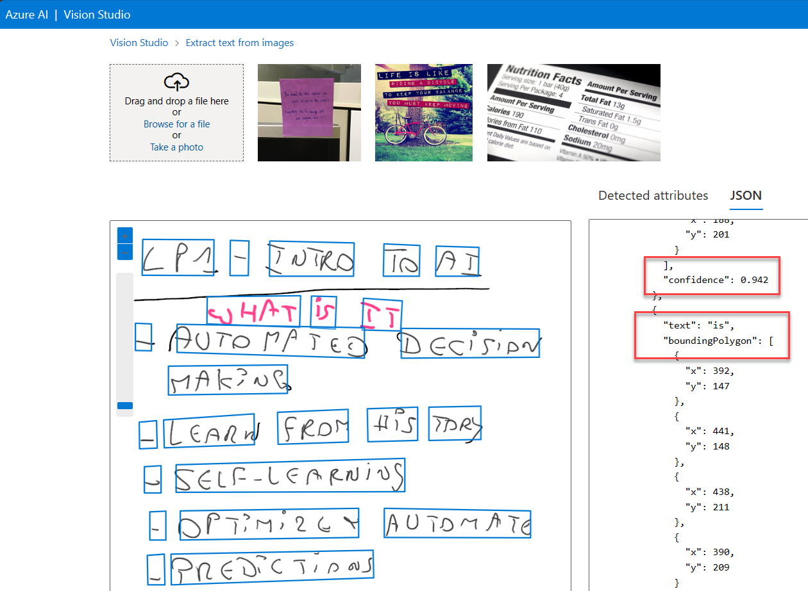
- For each character or set of characters recognized as text, different JSON properties and values are getting created. These identify the boundaries of the text on the image.
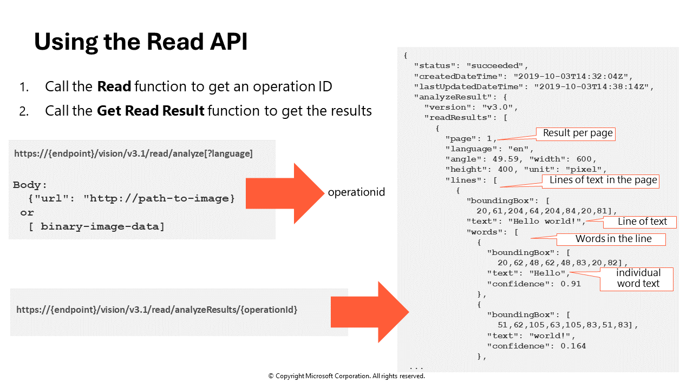
-
This is the core work of the Read API. So let’s have a more detailed look into that one for a second. The easiest I found to show this, is spinning up a Azure Cognitive Service Vision Docker Container.
-
Assuming you know a bit about Docker containers, and you have Docker Engine running on your local machine, execute the following command:
docker run --rm -it -p 5050:5000 --memory 4g --cpus 1 mcr.microsoft.com/azure-cognitive-services/vision/read:3.2-model-2022-04-30 Eula=accept Billing=https://yourcomputevisionresource.cognitiveservices.azure.com/ ApiKey=yourcomputevisionapikey
Replacing the Billing and ApiKey with the correct values from the Computer Vision Keys picked up earlier.
- With the Docker container running, open the browser to http://localhost:5050/status, which confirms the ReadAPI service is ready, and your API Key is valid
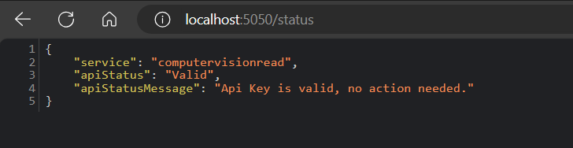
- Next, connecto to http://localhost:5050/swagger to interact with the different API endpoints of the Language Service running within the container
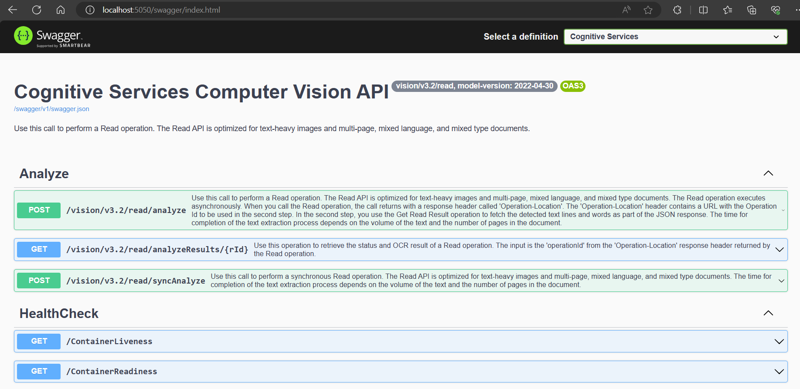
- From the swagger API interface, select POST in the Analyze section, and click Try it out.
- Scroll down a bit, and in the Request body section, provide a URL to an actual image. For example, you can use the sample image below, which is the same one available in the Vision Studio portal, showing the nutrition facts about some food item.
{
"url": "https://raw.githubusercontent.com/Azure-Samples/cognitive-services-sample-data-files/master/ComputerVision/Images/printed_text.jpg"
}
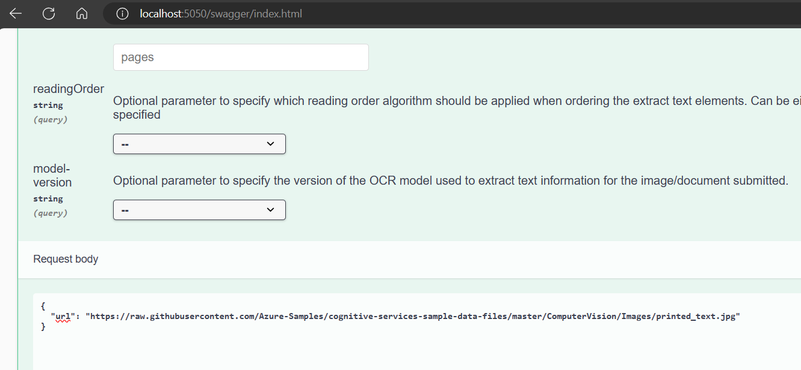
- Click the Execute button.
- This sends an API request and returns an analyze request ID from this URL: http://localhost:5000/vision/v3.2/read/analyze
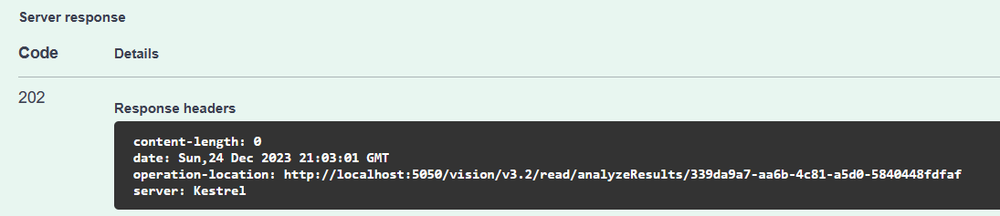
-
Copy the request id, and open it in the browser, e.g. http://localhost:5050/vision/v3.2/read/analyzeResults/339da9a7-aa6b-4c81-a5d0-5840448fdfaf
-
This brings up the full JSON structure of the analyzed text, including text snippets, bounding boxes,…
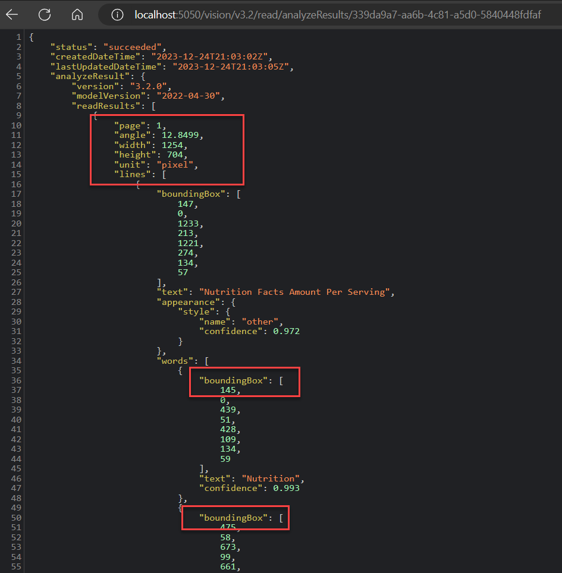
While quite impressive if you ask me, we had OCR technology doing almost the same, for the last 50-60 years already. Anyone remembers copiers and scanners, saving to a PDF document? Basically based on the same…
So let’s focus a bit more on the next level of OCR, using Intelligent Document Processing
Using Intelligent Document Processing or IDP
Similar to the Computer Vision Read API and Vision Studio, Azure AI also provides the Form Recognizer Service , which got recently renamed to Intelligent Document Processing or IDP.
Document Intelligence Read Optical Character Recognition (OCR) model runs at a higher resolution than Azure AI Vision Read and extracts print and handwritten text from PDF documents and scanned images. It also includes support for extracting text from Microsoft Word, Excel, PowerPoint, and HTML documents. It detects paragraphs, text lines, words, locations, and languages. The Read model is the underlying OCR engine for other Document Intelligence prebuilt models like Layout, General Document, Invoice, Receipt, Identity (ID) document, Health insurance card, W2 in addition to custom models.
Optical Character Recognition (OCR) for documents is optimized for large text-heavy documents in multiple file formats and global languages. It includes features like higher-resolution scanning of document images for better handling of smaller and dense text; paragraph detection; and fillable form management. OCR capabilities also include advanced scenarios like single character boxes and accurate extraction of key fields commonly found in invoices, receipts, and other prebuilt scenarios.
- From the Azure AI Portal, navigate to Document Intelligence, and create a new resource within. Default settings should be ok as-is.
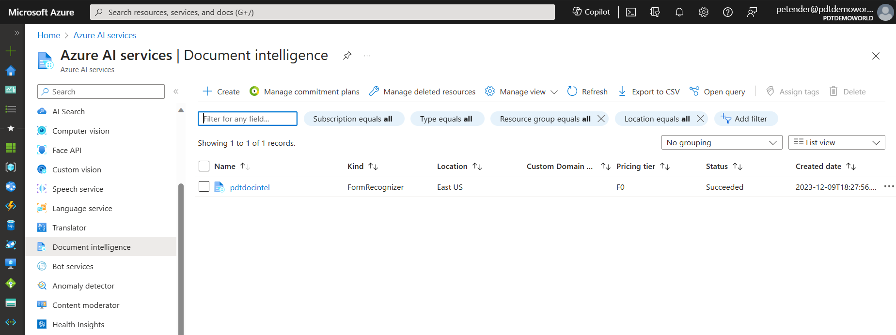
- Once deployed, from the Overview section, notice the Document Intelligence Studio option, and open it.
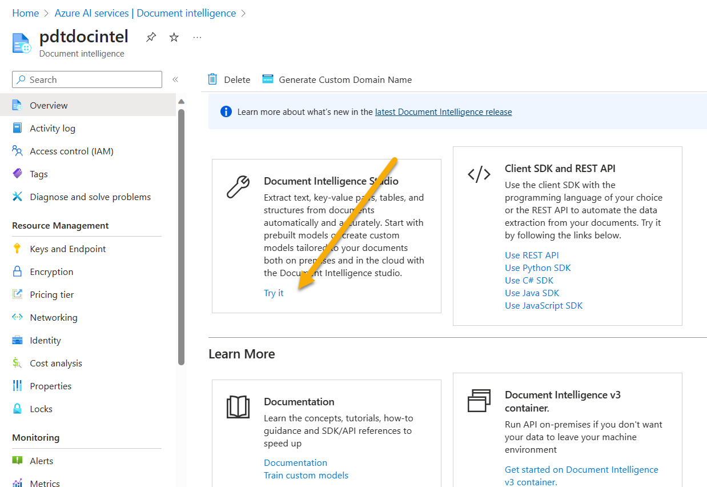
In the previous examples, the content was coming from an image-file type (jpeg,…). Where sometimes, we have more specific data types, such as forms, receipts, invoices, passport,…
This is where the compute vision text analyzer is not finetuned enough. That’s where we will use the form recognizer service, now known as document intelligence service.
Azure AI Document Intelligence is a cloud-based Azure AI service that enables you to build intelligent document processing solutions. Massive amounts of data, spanning a wide variety of data types, are stored in forms and documents. Document Intelligence enables you to effectively manage the velocity at which data is collected and processed and is key to improved operations, informed data-driven decisions, and enlightened innovation.
Document Intelligence recognizes 3 different models:
- Document Analysis - enable text extraction from forms and documents and return structured business-ready content ready for your organization’s action, use, or progress.
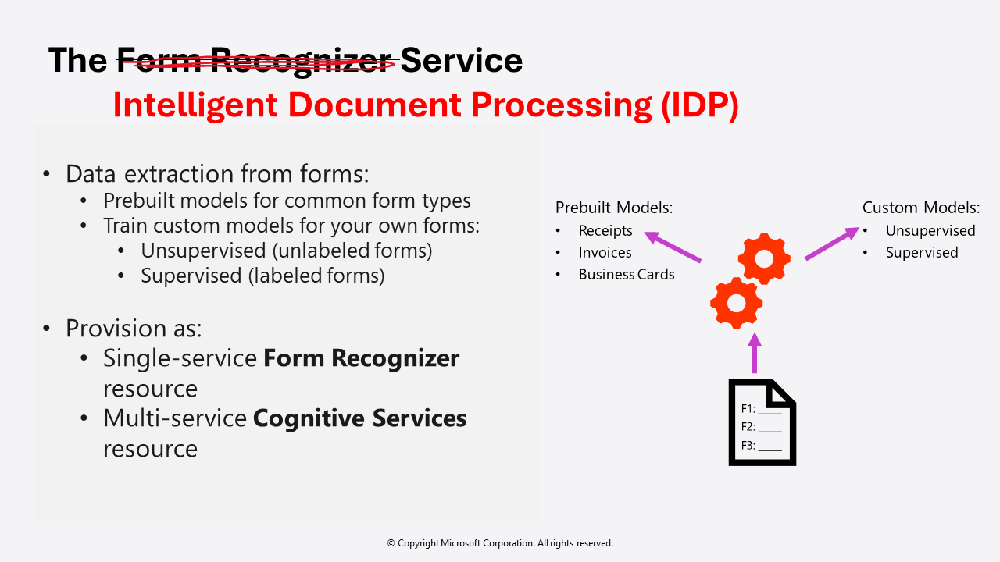
- Prebuilt models - Prebuilt models enable you to add intelligent document processing to your apps and flows without having to train and build your own models.
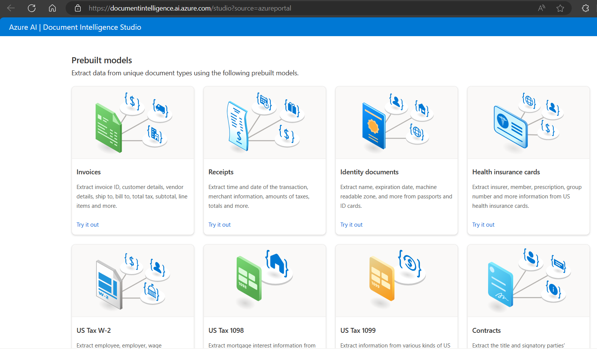
- From the Document Intelligence Studio, select a prebuilt model type of choice. I’ll use Invoice but the approach is the same for the other ones.
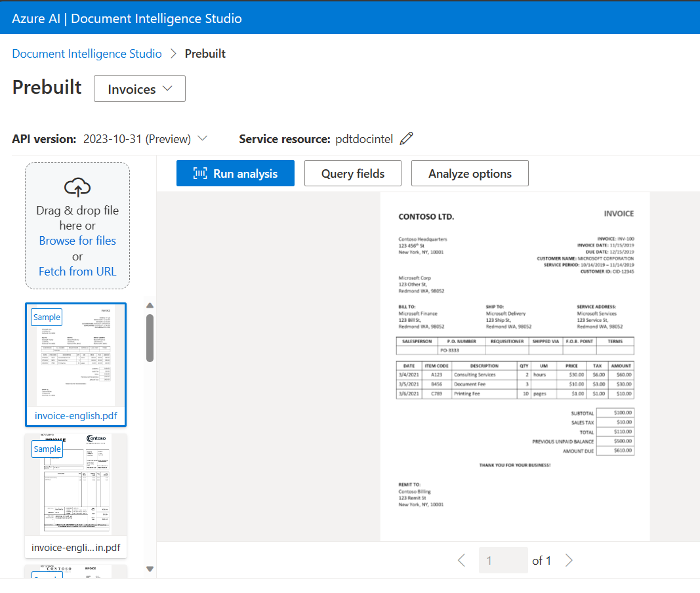
- Click Run Analysis
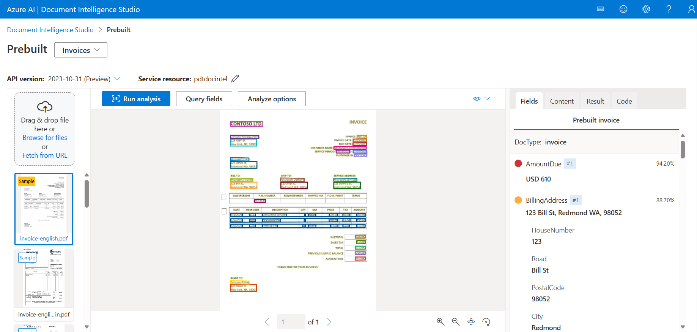
- As you can see, the different text items from the document (Invoice) are getting identified and tagged with a label. Similar to before, the technical output is stored in a JSON file.
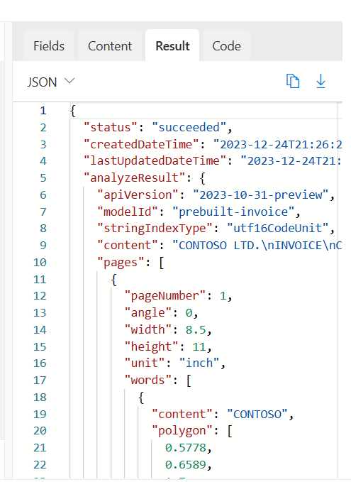
How to train the IDP using your own custom models
- Custom models - Custom models are trained using your labeled datasets to extract distinct data from forms and documents, specific to your use cases. Standalone custom models can be combined to create composed models.
Document Intelligence uses advanced machine learning technology to identify documents, detect and extract information from forms and documents, and return the extracted data in a structured JSON output. With Document Intelligence, you can use document analysis models, pre-built/pre-trained, or your trained standalone custom models.
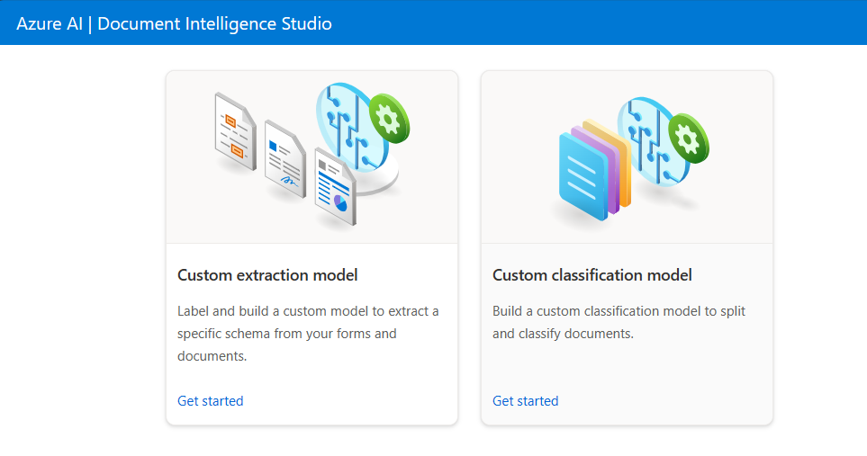
Custom models now include custom classification models for scenarios where you need to identify the document type prior to invoking the extraction model. Classifier models are available starting with the 2023-07-31 (GA) API. A classification model can be paired with a custom extraction model to analyze and extract fields from forms and documents specific to your business to create a document processing solution. Standalone custom extraction models can be combined to create composed models.
Custom document models can be one of two types, custom template or custom form and custom neural or custom document models. The labeling and training process for both models is identical, but the models differ as follows:
Custom extraction models
To create a custom extraction model, label a dataset of documents with the values you want extracted and train the model on the labeled dataset. You only need five examples of the same form or document type to get started.
Custom neural model
The custom neural (custom document) model uses deep learning models and base model trained on a large collection of documents. This model is then fine-tuned or adapted to your data when you train the model with a labeled dataset. Custom neural models support structured, semi-structured, and unstructured documents to extract fields. Custom neural models currently support English-language documents. When you’re choosing between the two model types, start with a neural model to determine if it meets your functional needs. See neural models to learn more about custom document models.
The custom template or custom form model relies on a consistent visual template to extract the labeled data. Variances in the visual structure of your documents affect the accuracy of your model. Structured forms such as questionnaires or applications are examples of consistent visual templates.
Your training set consists of structured documents where the formatting and layout are static and constant from one document instance to the next. Custom template models support key-value pairs, selection marks, tables, signature fields, and regions. Template models and can be trained on documents in any of the supported languages. For more information, see custom template models.
If the language of your documents and extraction scenarios supports custom neural models, we recommend that you use custom neural models over template models for higher accuracy.
-
From Document Intelligence Studio, scroll down and select Custom Models. Next, select Custom Extraction Model
-
From here, create a new project
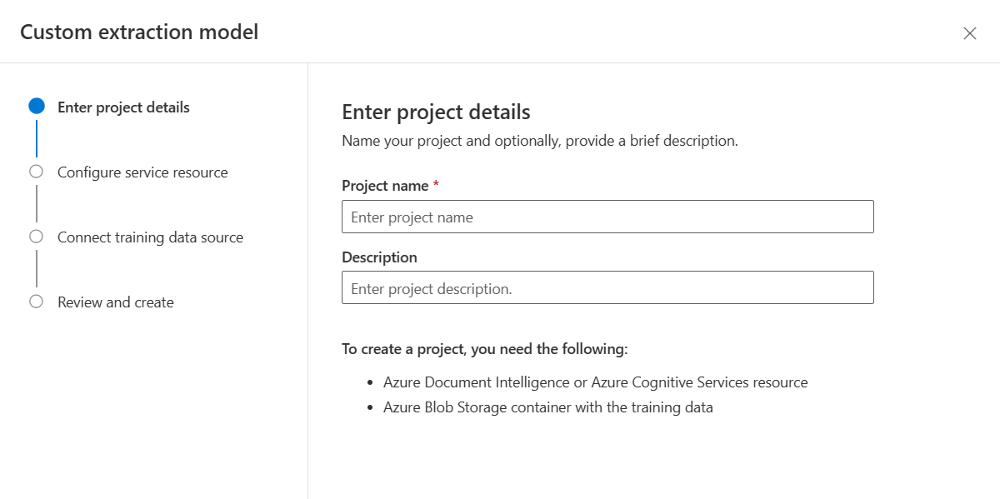
-
You need to specify where your document model sources (e.g. I am using my electricity bills, but could be receipts, delivery notes, business forms,…) can be found in Azure Blob Storage, but apart from that, all settings should be clear I hope.
-
Open the project you created, from where it allows you to upload sample files. Upload 5-10 identical documents, as that is what is required to train the model
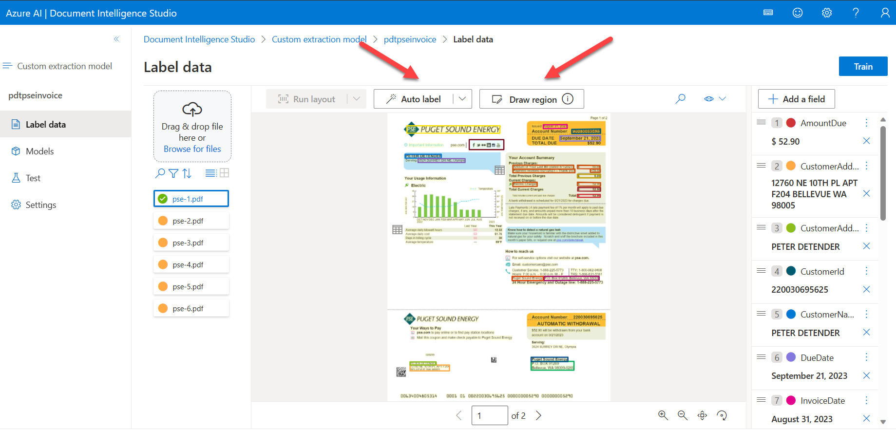
-
You can choose to use the Auto Label feature, or Draw Region to establish the different labels for the different text sections of your documents.
-
Once done for several identical documents, click Train. Which allows you to create an AI Data Model.
-
Last, you can run a test to validate how a new custom document gets analyzed and all items in the document will get recognized.
Summary
In this article, I wanted to introduce you to the exciting world of Azure AI, and more specifically how Computer Vision can be used to recognize text in images, known as OCR, but even more so, how Azure AI Document Intelligence API allows to bring in more advanced document template recognition into your applications.
Thanks to the Azure Festive Tech Calendar team for having me! Take care and Happy Holidays!

Cheers!!
/Peter